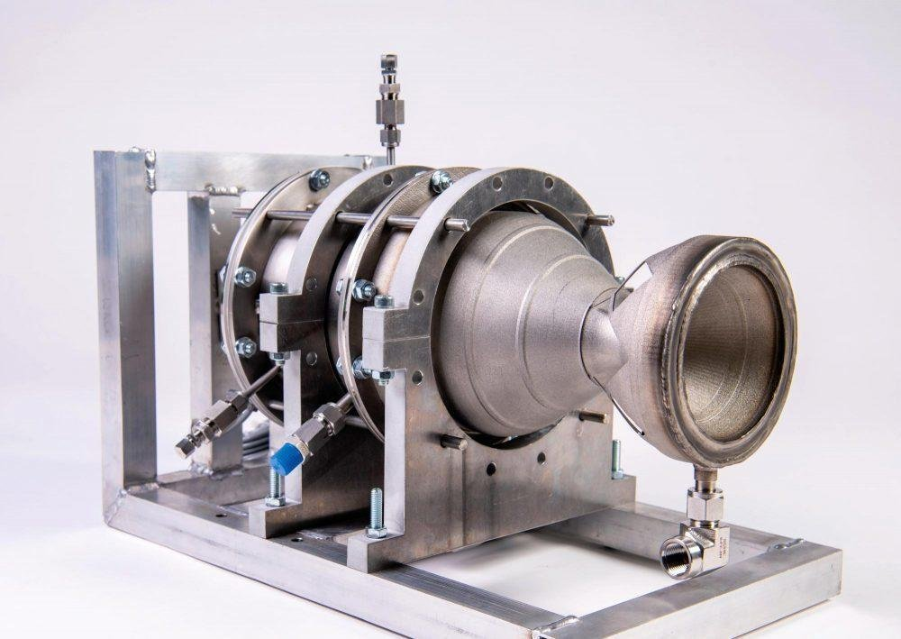
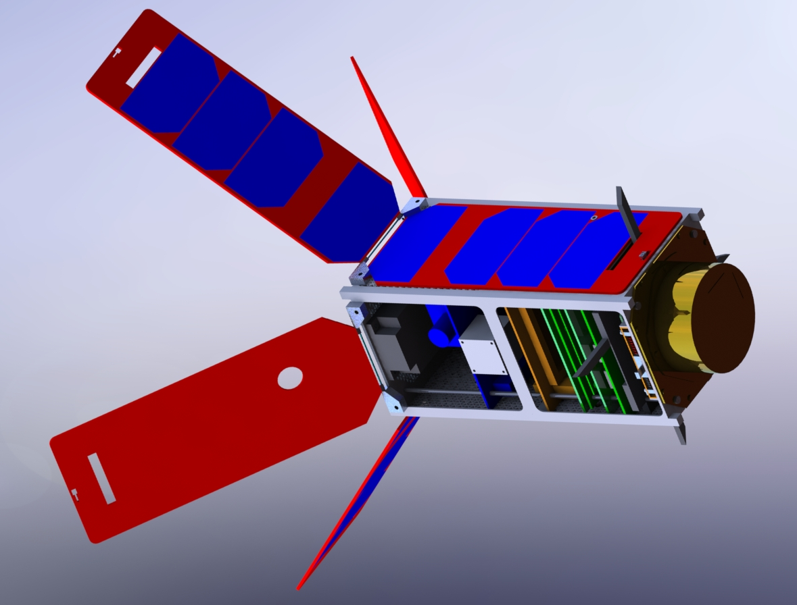
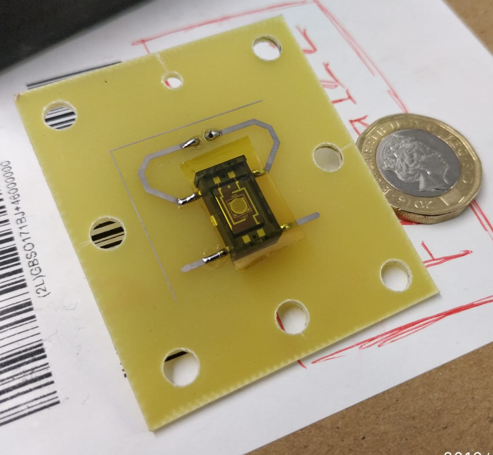
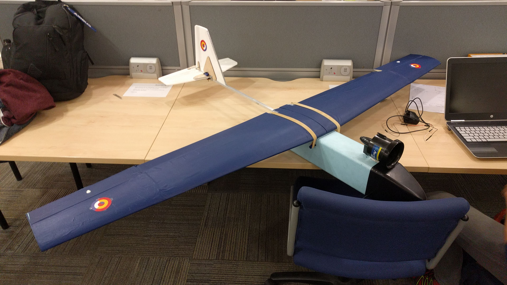
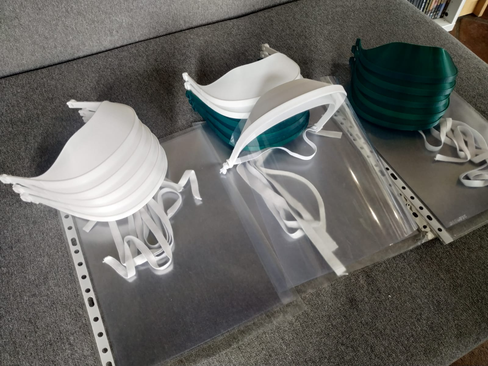
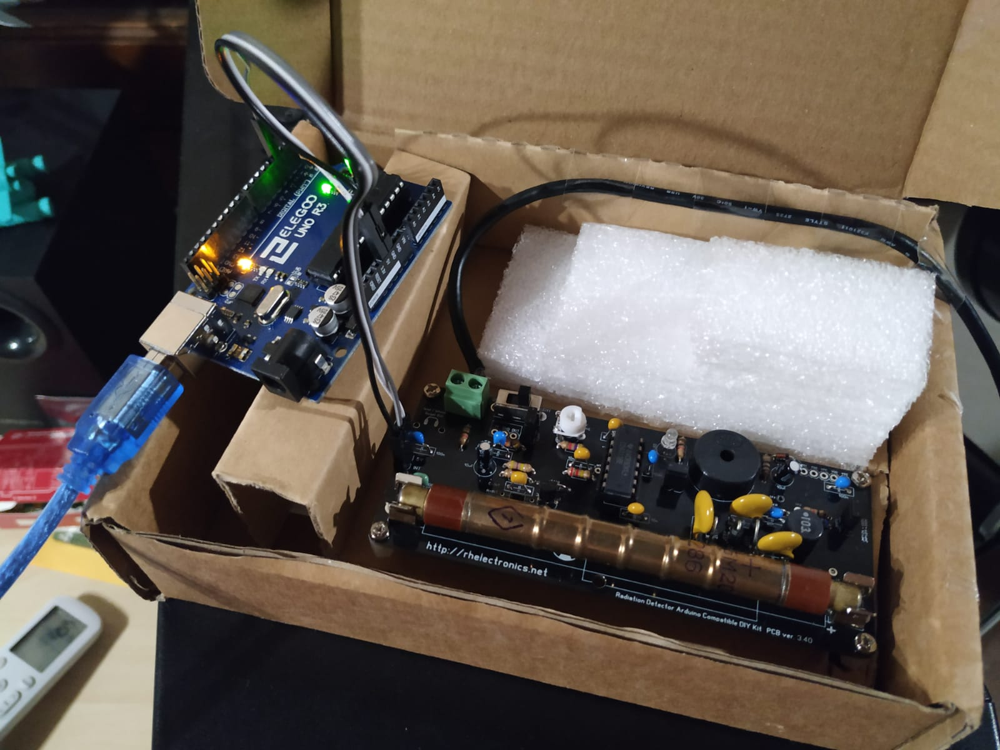

Projects
(This site is a constant work in progress!). Click here to return to the frontpage!
Sirius Bipropellant Rocket Engine
Project Sirius is a student led project that aims to design and build a cost-effective, three stage rocket to launch small satellites into low Earth orbit from a UK based spaceport.
The current stage of the project involves the design, manufacture and testing of a 1.5kN regeneratively cooled 3D printed liquid fuel engine. The project aims to serve as a testbed to develop a new generation of “green” propellant rocket propulsion.
Scientific CubeSat Concept Study
This project consisted in the conceptual design of a 2U CubeSat mission aimed at measuring the concentration of CO2 in the thermosphere. The development was carried out following a concurrent design approach.
The proposed spacecraft is also a technology demonstrator for the use of deployable solar arrays for passive attitude bias, SLS 3D printing for the primary structure and shape memory alloys in deployment mechanisms.
Miniaturised Infrared Radiometer
This project involved the design of a scientific instrument: a miniaturized infrared (IR) radiometer designed to measure net thermal radiative flux inside Venus' atmosphere.
This instrument has a minimal number of components: a thermopile sensor, a calibration source, and a MEMS light switch. The MEMS device can either reflect external atmospheric light into the sensor, or steer radiation from the calibration target into the sensor. Providing in-situ reference readings to calibrate the mirror while it descends through the atmosphere, correcting any measurement drifts.
Fixed Wing UAV
This project comprised the design, manufacture and testing of a 1.8 m wingspan UAV. We had to face the challenges involved when dealing with tight mass, volume, time and cost budgets.
We were able to design and build a machine that can fly beautifully while recording lots of telemetry & payload data to serve very different missions.
Covid-19 Face Shields
During the Covid-19 pandemic, which badly affected Spain, I joined a local initiative to produce and distribute 3D-Printed face shields to help essential public workers protect themselves during nationwide lockdown.
Individually, I produced and delivered over 60 face shields to a diverse range of public services among which I can name the Spanish National Police, the local Ambulance Service and the Spanish Red Cross.
Arduino Geiger Muller Counter
I've always wanted to have my very own Geiger-Müller counter to test radioactive samples, but the price of profesional grade equipment is too high to justify the cost for a "toy". Instead, I decided to build it myself using readily available consumer parts.
The device only employs four parts: the Geiger-Müller tube driver circuit, the tube itself, the Arduino microcontroller, and a portable 5V USB battery. It features a data logging function.